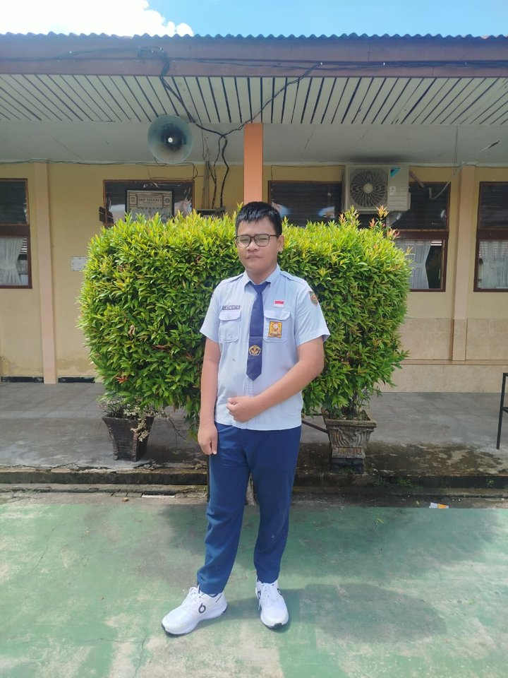

Game web · Konsep
PetVerse
Game koleksi pet dengan telur, tingkat kelangkaan, dan database online bersama.
- Telur dan tingkat kelangkaan (rarity)
- Koleksi dan upgrade pet
- Tanaman yang dijual di toko
Memuat aset...
Pelajar PPLG / RPL · SMK 1 Bangkinang
Saya suka membangun website, bereksperimen dengan game, dan merancang ide digital yang bermanfaat. Belajar, membangun, lalu membagikan.

Saya pelajar jurusan PPLG / RPL di SMK 1 Bangkinang. Saya berminat pada pengembangan perangkat lunak dan gim, dengan fokus belajar pemrograman, pembuatan website, serta dasar pengembangan game.
Saya senang mengubah ide menjadi proyek kecil yang bisa dicoba langsung. Mulai dari halaman web sederhana, eksperimen game, sampai alat bantu yang menyelesaikan masalah sehari-hari.
Proyek, perjalanan pendidikan, dan sedikit hiburan.
Game web · Konsep
Game koleksi pet dengan telur, tingkat kelangkaan, dan database online bersama.
Website · Eksperimen
Website add-on dengan profil, misi harian, redeem code, dan akun premium.
Plugin · Belajar
Plugin Paper yang membisukan kata kasar dan menghukum spam di chat.
Web app · Ide
Alat bantu belajar berupa timer, daftar tugas, dan catatan ringan.
Aku memilih angka dari 1 sampai 10. Kamu punya 4 kesempatan untuk menebaknya.
♥♥♥♥Rekor: belum ada
Ketik angka lalu tekan Tebak.